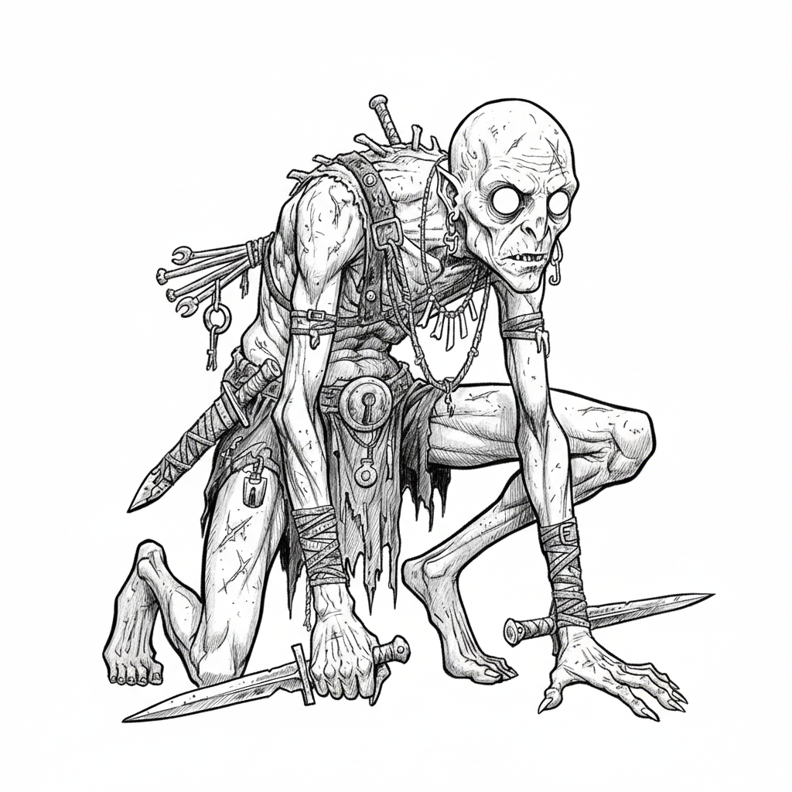

You're from the deep earth, from a fallen branch of humanity that never saw the sun. Gray skin, milky eyes, rodent features, your kind are little more than beasts. But you're clever. You guide surface folk through the killing dark, and when their backs are turned, you take what gleams. Gold. Steel. The things they don't appreciate. You don't belong in their world, and you never will. But you'll take what you can.
You know the underground like others know their own skin. Born in lightless depths, you navigate by sound, scent, and instinct where surface-dwellers stumble blind.
You can find hidden paths, squeeze through impossible gaps, and sense danger in the dark where others see only stone. Unstable ground, poisonous air, lurking predators, your senses warn you before disaster strikes.
In the deep earth, you are at home. You move silently, see in near-total darkness, and understand the language of stone and water. You are guide, scout, and survivor.
But the surface world feels alien and hostile. Bright light blinds you. Open sky makes you anxious. The surface folk look at you with disgust and fear, and no amount of service earns their trust. You are useful, but never welcomed. You are a wretch, and you know it.
Skrit, Murk, Gnaw, Scuttle, Filch, Retch, Gristle, Shriek
Scurry, Grub, Bone, Wick, Mold, Cinder, Crawl, Twitch
Choose two or three inhuman features:
Skin: Gray and ashen, Mottled, Translucent, Covered in grime
Eyes: Milky white, Completely black, Huge and unblinking, Reflective like a rat's
Features: Rodent teeth, Twitching nose, Large ears, Hunched posture
Hands: Grasping fingers, Long nails, Calloused and scarred, Too many joints
Choose one for clothes:
Clothes: Ragged, patched clothing, Scraps of stolen finery, Filthy wrappings, Surface armor (poorly fitted)
You start with these moves:
You were born in lightless places where humanity has no claim.
You suffer in human society:
You thrive underground:
You know the tunnels, the caves, the forgotten ways beneath the earth. When you lead others through dangerous underground terrain, roll+WIS. ✴On a 10+, you find a safe path; the group avoids danger and makes good time. ✴On a 7-9, you find a path, but choose one:
You can also identify hazards underground (unstable rock, gas pockets, predator dens, etc.) at a glance.
You are obsessed with human gold and weaponry. When you see treasure or a fine weapon, the GM may compel you to take it, resist this urge by Defying Danger with WIS.
When you examine treasure, weapons, or valuable goods, roll+INT. ✴On a 10+, you know its worth, origin, and any special properties. ✴On a 7-9, you know its approximate worth.
You always know when you're being cheated in a deal involving gold or weapons.
When you attack a surprised or defenseless enemy with a melee weapon, roll+DEX. ✴On a 10+, choose two. ✴On a 7-9, choose one:
When you move quietly through shadows or underground spaces, you are nearly impossible to detect. Enemies must Discern Realities to notice you before you strike.
In darkness or underground, take +1 to Defy Danger when trying to avoid detection.
Choose an alignment:
Chaotic
Steal something valuable that you don't need, simply because you want it.
Neutral
Guide someone safely through dangerous underground terrain, even though you could have betrayed them.
Evil
Murder someone for their gold or weapon when you could have simply taken it.
Fill in the name of one of your companions in at least one:
_____ does not know what I am, and I will keep it that way as long as I can.
_____ saved me from being killed by surface-dwellers; I owe them my life.
I covet something _____ owns, and I think about taking it constantly.
_____ treats me like a person, not a creature, and I will protect them for it.
Your Load is 8+STR.
You start with:
Choose one weapon you've scavenged or stolen:
Choose one prize from a past theft:
Choose one tool of your trade:
When you gain a level from 2-5, choose from these moves:
You can climb and move along cave walls and ceilings as easily as walking. You never fall from climbing unless catastrophically surprised.
Your kind have eaten foul things to survive. You are immune to ingested poisons and can consume rotten food without harm. You can identify poisonous substances by taste (though this may be unpleasant to witness).
When you Backstab in complete darkness or deep underground, deal an additional +1d6 damage (stacks with Backstab damage).
You have hidden caches throughout the underground. When you return to a familiar subterranean area, roll+WIS. ✴On a 10+, you have a stash here; gain 1d6×10 coins or a piece of useful gear you left behind. ✴On a 7-9, you have a stash, but it's been disturbed; gain half the coins or damaged gear.
Like a proper thief, you've learned the ways of traps. When you study a trapped area or mechanism, roll+WIS. ✴On a 10+, ask 3 questions from the list. ✴On a 7-9, ask 1 question:
Take +1 forward when acting on the answers.
When in darkness, you can move between shadows with uncanny speed. Take +1 ongoing to Defy Danger when moving through dark areas.
When you gain a level from 6-10, choose from these moves or the level 2-5 moves:
When you set up an ambush in underground terrain, your enemies walk right into it. The first attack you or an ally makes from the ambush automatically deals maximum damage.
You have learned the chittering, scraping languages of things that dwell below. You can communicate with:
They may not be friendly, but they understand you.
Your fascination with gold and steel has become mastery. Choose one:
When you emerge from hiding to strike, roll+DEX. ✴On a 10+, you appear exactly where you need to be; take +1 forward and your target is caught completely off-guard. ✴On a 7-9, you appear where you want, but someone notices you at the last moment.
This works in darkness, behind cover, or emerging from tunnels.
You are nearly impossible to hold. When you attempt to escape bonds, cages, or restraints, roll+DEX. ✴On a 10+, you're free, and no one notices until you're gone. ✴On a 7-9, you're free, but you leave evidence or make noise.
You can also squeeze through impossibly tight spaces (pipes, cracks, ventilation) given time.
When you strike at someone who has wronged, humiliated, or underestimated you, roll+STR. ✴On a 10+, deal damage and choose two. ✴On a 7-9, deal damage and choose one:
You can sense the shape of underground spaces around you, almost like echolocation. You always know:
Caught between two worlds, too clever for the depths, too monstrous for the surface. You guide the lost, steal from the dead, and hoard the gleaming things you can never truly be part of.
Into the Barrowlands Campaign